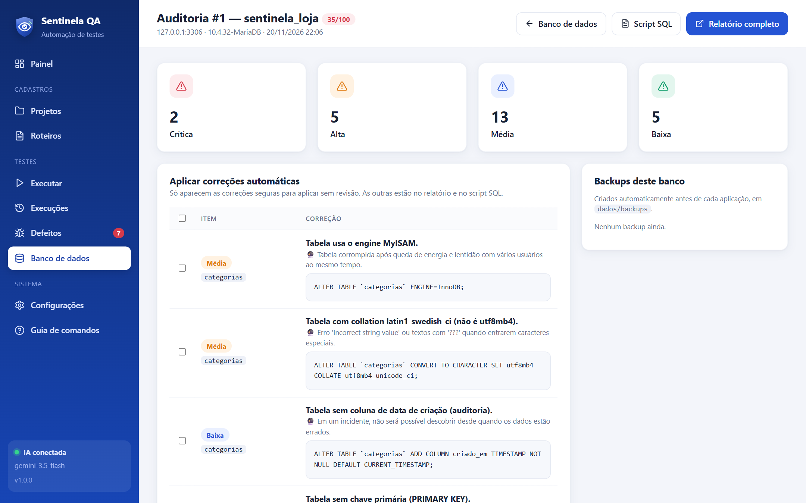
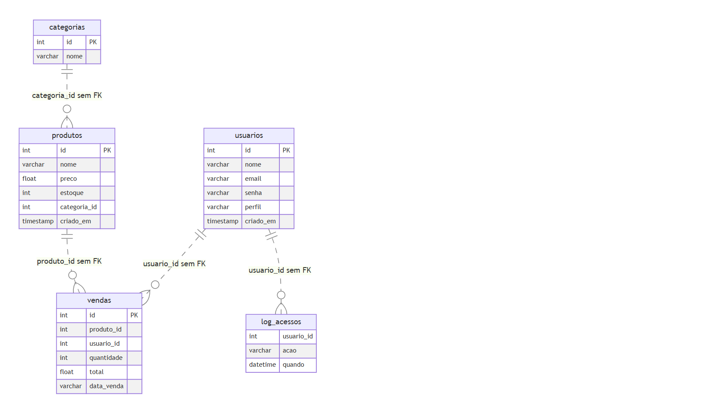

O que ele faz
Da automação por coordenadas de tela para testes com seletores estáveis, asserções e evidências.
Testa três tipos de alvo
Sites com Playwright, programas Windows com UI Automation e APIs REST/JSON sem navegador.
Roteiros legíveis
Passos como clicar: "Entrar" ou “Quando eu clico em "Entrar"”. Feito para QA com pouca programação.
Procura falhas de validação
Campo vazio, CPF e e-mail inválidos, caracteres especiais e valores-limite com Faker pt_BR.
Sugestões de melhoria
O Gemini analisa os prints e sugere melhorias de usabilidade, texto e acessibilidade.
Relatório completo
Casos com esperado × obtido, defeitos com severidade, passos para reproduzir e print de cada passo.
Painel de defeitos
Ciclo de vida do bug, exportação CSV e texto pronto para o Jira. CI no GitHub Actions.
Auditor de banco de dados
Lê a estrutura, aponta o que mudar, como, onde agir e os problemas futuros. Corrige com backup automático.
Qualidade além do funcional
Acessibilidade WCAG, contrato de API, regressão visual, desempenho, teste de carga, segurança e links.
Testar API
Requisições com verificações, variáveis (token JWT), código gerado e importação de coleções do Postman.
Ferramentas do mercado
Roda suítes de outros frameworks (JUnit XML) e exporta roteiros para Playwright TS, Cypress, RestAssured, Appium e Maestro.
Sistemas de treino
Loja PHP + MySQL no XAMPP, Estoque Desktop em WinForms e site local — todos com bugs plantados.
Auditoria de banco de dados
Nota de saúde, previsões e correções — a IA recebe só a estrutura, nunca os dados.


Relatórios ao vivo
Relatórios reais gerados pelo Sentinela (sites e APIs de demonstração). Clique para abrir.
Sauce Demo
Fluxo de compra completo e 5 falhas de validação encontradas (CEP com letras, nome só com espaços…).
6/6 aprovados5 defeitosIA
The Internet
Hover, arrastar e soltar, upload, teclas, conteúdo dinâmico e um caso com falha proposital.
8 aprovados1 reprovadoIA
Loja Treino
Login, busca e cadastro com CPF. A exploração encontra o bug plantado no telefone.
6/6 aprovados1 defeitoIA
ViaCEP + JSONPlaceholder
Status HTTP, contrato do JSON, tempo de resposta, CEP inválido e POST encadeado.
4/4 aprovadosIA
Loja PHP
Tela, API REST e conferência no banco. A exploração acha preço negativo aceito; o axe acha contraste ruim.
6 aprovados1 reprovado · 5 defeitosIA
Estoque Desktop
Login, cadastro, combo e busca num programa Windows de verdade — encontra a quantidade negativa aceita.
5 aprovados1 bug plantadoIA
sentinela_loja (MariaDB)
O que mudar, como, onde agir e problemas futuros — com SQL de correção, previsão e diagrama.
nota 35/100análise da IA
Antes × depois
A evolução de uma automação antiga com PyAutoGUI.
| Antes | Agora |
|---|---|
pyautogui.click(512, 340) | clicar: "#login-button" — seletor estável |
time.sleep(3) | espera automática até o elemento estar pronto |
| sem verificação | asserções de texto, URL, mensagem, status HTTP e JSON |
| sem evidência | print de cada passo e caminho percorrido com horário |
| senha no script | {env.SENHA} lido de um .env fora do Git |
Experimente o site de treino
A mesma lojinha usada nos testes automáticos (tem um bug plantado — consegue achar?).
Abrir a Loja Treino · usuário qa, senha treino123 (fictícios).